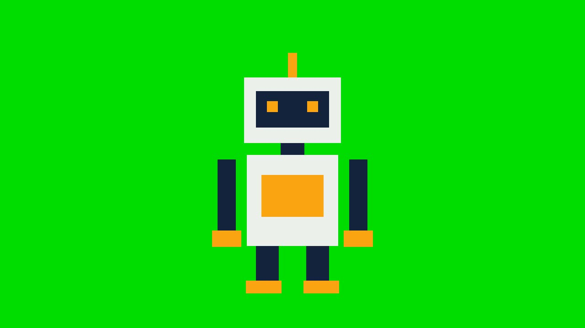
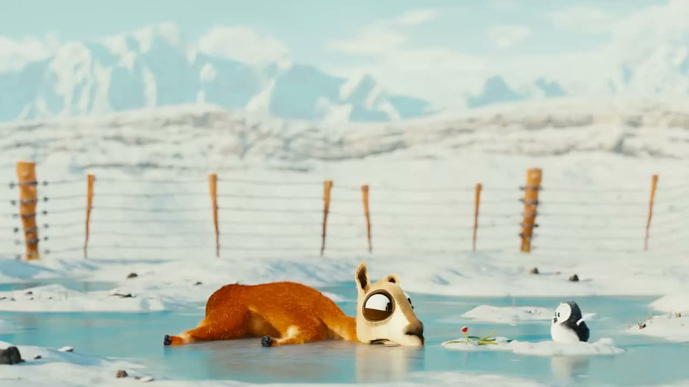
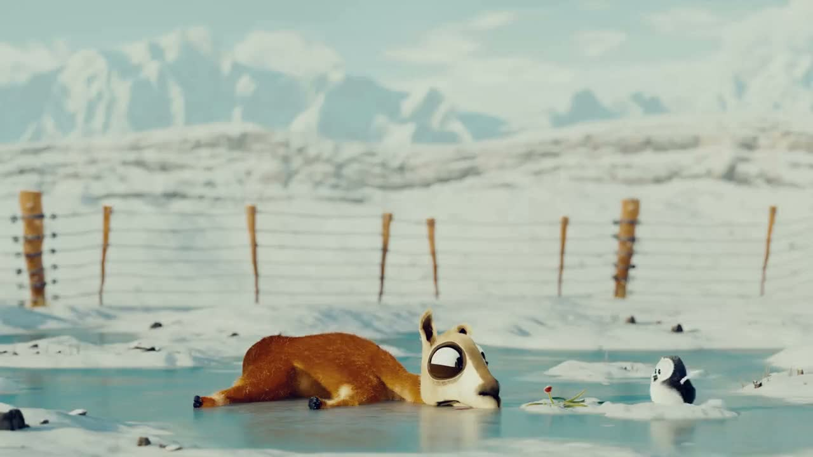

PRODUÇÃO AUDIOVISUAL · AULA 13 · SHOTCUT
Um kit pronto para praticar no computador: dois personagens sobre verde, dois cenários e dois planos para comparar e corrigir. Sem conta ou envio de arquivos.
Baixar Aula13-Shotcut.zipTravou? Abrir passos, critérios de pronto e soluções por sintoma. A ajuda também está dentro do ZIP e funciona sem internet.
| Arquivo | Uso |
|---|---|
| personagem-verde.mp4 | Composição principal · 6 s |
| personagem-cracha.mp4 | Teste do objeto verde · 6 s |
| cenario-estudio.png | Fundo claro |
| cenario-noite.png | Fundo escuro |
| cor-referencia.mp4 | Plano que permanece sem filtros · 6 s |
| cor-alterada.mp4 | Plano a corrigir · 6 s |
| COMECE-AQUI.txt | Preparo e consulta no editor |
| AJUDA.html | Passos de cada desafio e soluções para continuar por conta própria |
| CREDITOS.txt | Autoria, adaptações e licença |

O personagem é um desenho sintético. Ele permite estudar a chave e as camadas; uma gravação real também exige cuidar de cabelo, sombra e reflexos verdes.


Para consultar sem internet: COMECE-AQUI.txt. Acompanhe os pedidos no projetor; quem terminar melhora o pedido atual.